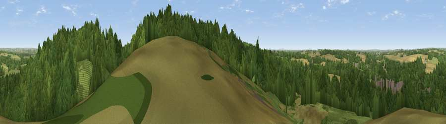

Viewpoint near Milford
#28307 in England · top 44% of its area beats it · near MilfordThe view, rendered

A 360° render of this exact spot computed from the terrain model, tree cover and land cover — summer colours, afternoon light, calibrated against photographs of famous viewpoints. Real trees, hedges and buildings will differ in detail.
The panorama
Grey silhouette: terrain skyline in each direction (720 bearings, Earth curvature and refraction included). Dashed green: skyline with trees (+15 m) and buildings (+8 m) as obstacles. Blue strip: how far the ground is visible on each bearing.
Where the view opens
Wedge length = distance to the farthest visible ground on that bearing (vegetation-aware). Rings at 10, 25 and 50 km.
What fills the view
74% woodland · 14% grassland · 9% cropland · 2% built-up ·
Angular shares of the visible panorama (visual magnitude), not map area. Landscape diversity 0.36 (0–1 Shannon).
Key numbers
More beautiful places nearby
The staircase of upgrades: each row has a higher view potential than everything closer. Driving times are estimates from straight-line distance, calibrated against real road routing — check an actual route before setting out.
| Place | Direction | Drive | Score |
|---|---|---|---|
| Oat Hill | SSE · 0 km | ~2 min | 46.7 |
| Viewpoint near Milford | ENE · 1 km | ~2 min | 50.8 |
| Viewpoint near Bishton | ESE · 4 km | ~9 min | 51.7 |
| Viewpoint near Slitting Mill | ESE · 6 km | ~12 min | 52.4 |
| Stafford Castle | W · 8 km | ~15 min | 60.6 |
| Wimblebury Hill | SSE · 11 km | ~20 min | 62.0 |
| Viewpoint near Sheriffhales | WSW · 22 km | ~36 min | 63.8 |
| Viewpoint near Sheriffhales | WSW · 22 km | ~36 min | 64.4 |
52.78500, -2.03665 · source: screening · position refined by local search. Computed location — check access rights before visiting.